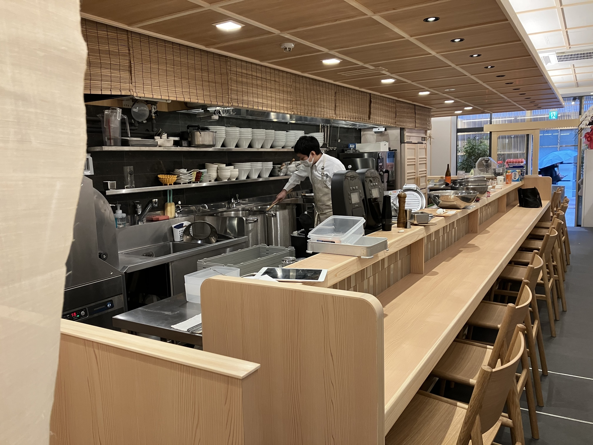
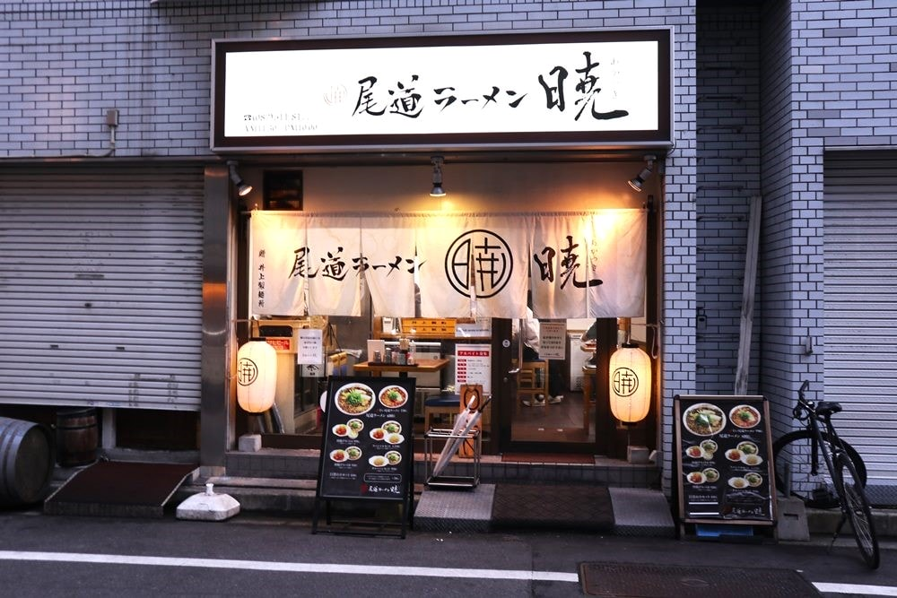
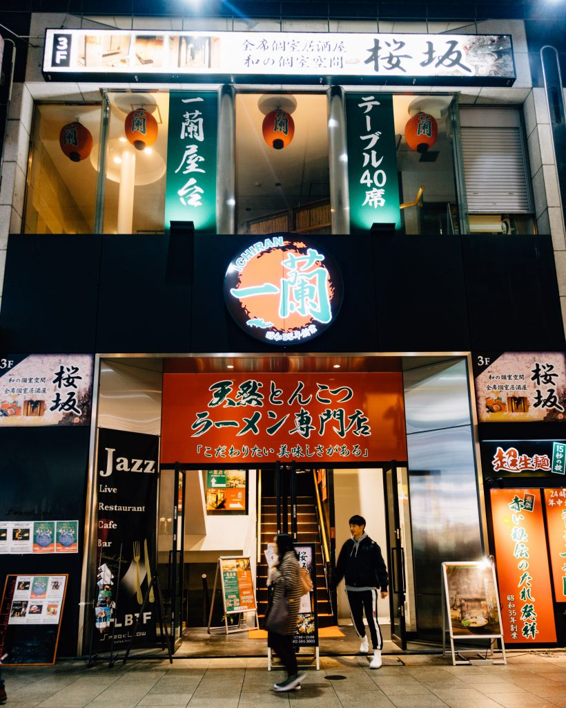

★★★★★
In this restaurant, they are interested about make eating ramen as an elevated experience, with a good price. Tasty, top-class service, good quality of ingredients.

★★★★
Hiroshima's regional ramen! They have tasty combos and affordable prices.

★★★
The classic option. Comfortable location, very accesible schedule and customized taste.
